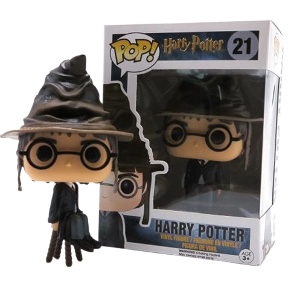
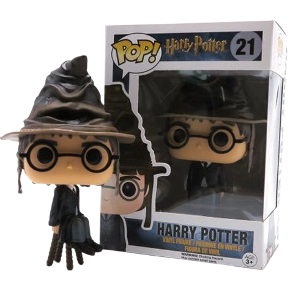

Qual é a grande missão de Dobby? E o porque de suas meias?
Dobby se torna um grande guardião de Harry Potter, após Lucios Malfoy descobrir que o pensonagem principal está vivo. Dobby irá tentar proteger o maxímo seu grande amigo e companheiro, Harry Potter. Suas meias representam a sua simplicidade e a sua primeira peça de roupa que seu grande amigo Harry Potter lhe deu.
 


Qual é a missão das varinhas?
Na saga de Harry Potter, as varinhas de cada bruxo os escolhem. O chapéu seletor têm como função escolher qual é a casa que cada bruxo vai representar, no caso de Harry Potter ele pertencera a Grifinoria. A fênix que é enviada a ele é a fênix de Dumblendor.